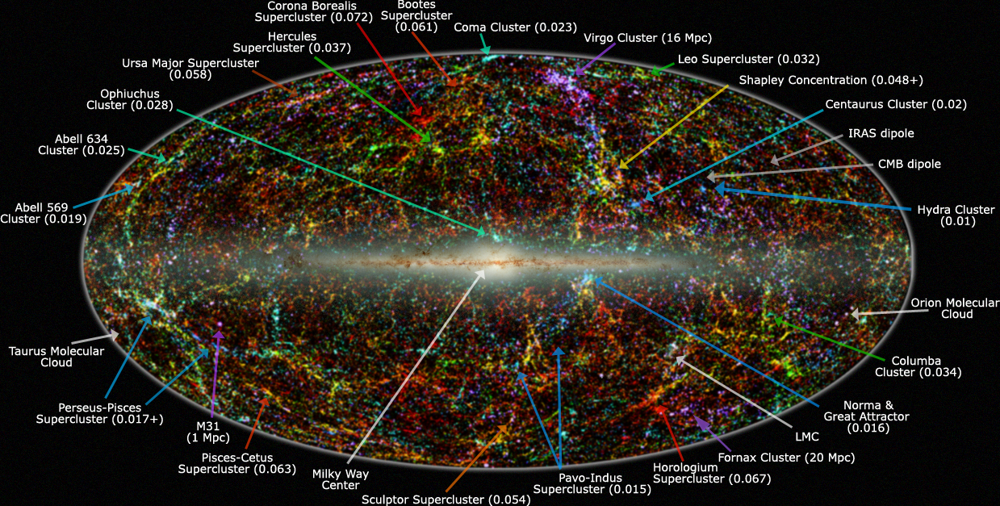

The Mysteries of the Universe
The universe is a realm of profound mysteries and complex phenomena. One of the greatest enigmas is dark matter, an invisible substance that does not emit light but exerts gravitational effects on visible matter. Its existence is inferred from observations of galaxies and cosmic structures, yet its true nature remains elusive. Another mystery is dark energy, a force thought to be driving the accelerated expansion of the universe. Understanding these and other cosmic phenomena requires cutting-edge research and innovative technologies. By studying cosmic microwave background radiation, gravitational waves, and the distribution of galaxies, scientists aim to unlock the secrets of the universe’s origins, structure, and ultimate fate. Each discovery brings new insights and deeper questions about the fundamental nature of reality.
The Future of Space Exploration
The future of space exploration holds exciting possibilities and groundbreaking advancements. Space agencies and private companies are working together to push the boundaries of what’s possible. The development of reusable rockets, such as those pioneered by SpaceX, is revolutionizing space travel by reducing costs and increasing accessibility. Plans for lunar bases and Mars missions are on the horizon, with potential for human colonization and resource extraction. Advances in propulsion technology, such as ion drives and nuclear thermal rockets, could enable faster and more efficient travel to distant planets and beyond. As we continue to explore the cosmos, we not only seek to expand our knowledge but also to inspire future generations to dream big and reach for the stars. The journey ahead promises to be as vast and exciting as the universe itself, offering endless opportunities for discovery and adventure.
The Great Attractor
The Great Attractor is a mysterious and powerful gravitational anomaly located in the vast expanse of space, approximately 150 to 250 million light-years away from Earth. It is an immense concentration of mass, influencing the motion of galaxies over a large region of the universe. Although it cannot be observed directly due to its location behind the plane of our Milky Way galaxy, its presence is inferred from the observed motion of galaxies, which appear to be converging toward it. This cosmic phenomenon exerts a significant gravitational pull on our Local Group of galaxies, including the Milky Way, causing them to move at high velocities. The Great Attractor's exact nature remains elusive, but it is believed to be a colossal supercluster of galaxies or a vast, hidden mass of dark matter. Its study provides crucial insights into the large-scale structure of the universe and the forces shaping the cosmic web.
More Random Facts About Space
- Expanding Universe: The universe has been expanding since the Big Bang approximately 13.8 billion years ago. This expansion is accelerating due to a mysterious force called dark energy.
- Cosmic Microwave Background: The cosmic microwave background radiation is the afterglow of the Big Bang. It is the oldest light in the universe, dating back approximately 380,000 years after the Big Bang.
- The Great Red Spot: Jupiter’s Great Red Spot is a giant storm that has been raging for at least 400 years. It is about 1.3 times the diameter of Earth.
- Rogue Planets: Rogue planets are planets that do not orbit any star. They travel through space alone and may have been ejected from their original star systems.